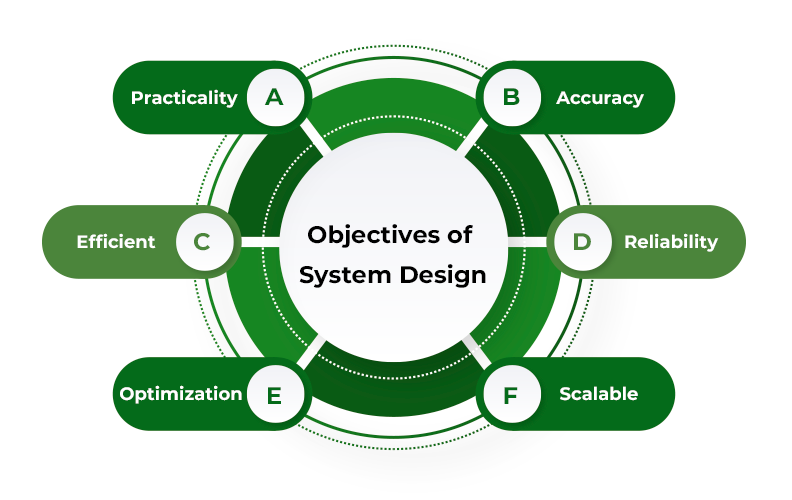

Systems Design, Engineering, and Organization
Focus on scalability, modularity, and efficient workflows to ensure robust and adaptable digital systems.
Priority:
Establish a robust, scalable, and resilient system architecture.
Why Advocate for This:
In today's fast-evolving tech landscape, ensuring that the systems are designed to scale and adapt to new requirements is crucial. This includes modular architecture, microservices, and cloud-native technologies. These approaches allow for easier updates, better resource management, and the ability to handle increased loads efficiently.
Key considerations include:
- Practicality: Ensure that it is easy and intuitive to use without prior knowledge of the system.
- Scalability: Ensure the system can handle increasing user loads without performance degradation.
- Reliability: Design for fault tolerance with redundancies to minimize downtime.
- Optimization: Employ microservices or modular approaches for flexibility and ease of updates.